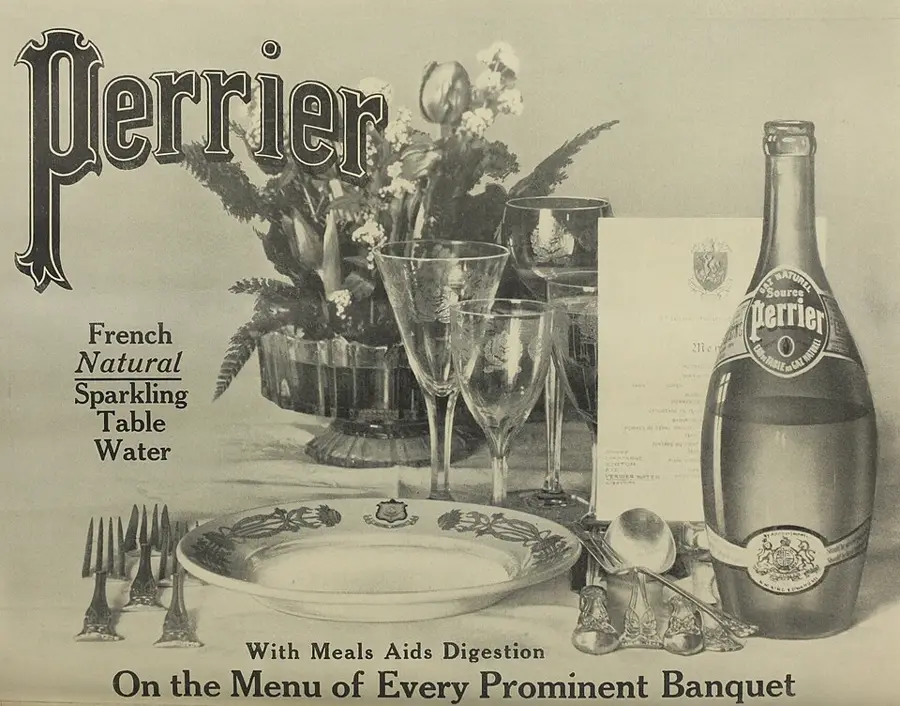
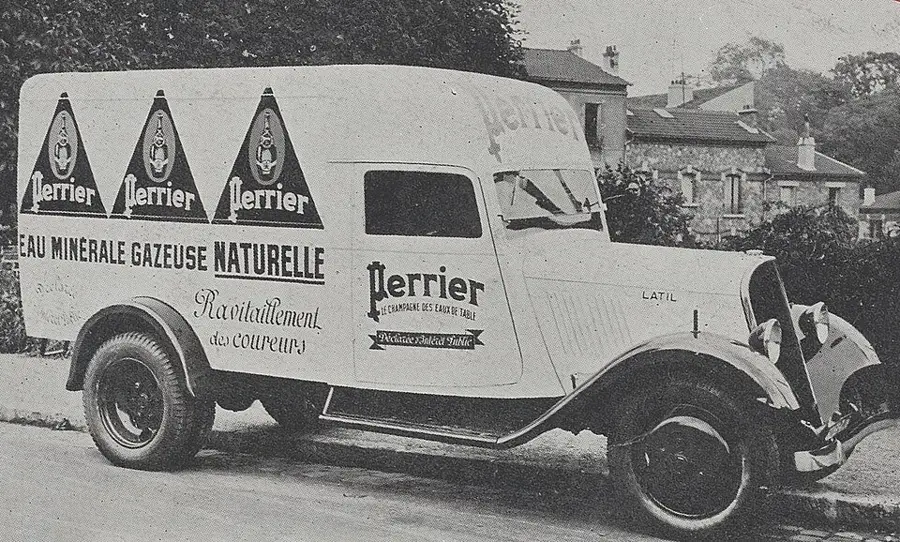

대표 로고대표 브랜드 마크
대표 로고대표 브랜드 마크페리에 Perrier
페리에(Perrier)는 프랑스 베르제즈 마을을 수원지로 삼는 자연 광천수 생수 브랜드이다. 자연 탄산수이며 탄산 함유량이 높고 초록색 병 디자인으로 널리 알려져 있다.
최종 업데이트
페리에는 어떤 브랜드인가
페리에는 프랑스 가르주 베르제즈 마을을 수원지로 삼는 자연 광천수 생수 브랜드이다. 자연 탄산수라는 점과 탄산 함유량이 높다는 점, 특유의 초록색 병 디자인으로 널리 알려져 있다.
병에 담긴 탄산의 농도는 베르제즈 마을 수원지의 탄산 농도와 같은 수준이다. 현재는 네슬레 워터 프랑스가 생산하며, 이 회사는 비텔, 산 펠레그리노, 콩트렉스 등의 브랜드도 생산한다.
유럽에서는 병과 캔으로 판매되고, 한국에서는 330ml 병이 주로 수입된다. 병은 특유의 '눈물방울' 모양에 뚜렷한 녹색을 띠고, 맛은 보통맛, 레몬맛, 라임맛 등으로 나뉘어 판매된다.
페리에는 어떻게 시작되고 성장했나
페리에는 1903년에 설립된 프랑스의 자연 광천수 생수 브랜드이다. 수원지는 프랑스 가르주 베르제즈(Vergèze) 마을이며, 물과 자연 탄산가스 모두 이곳에서 각각 따로 추출한다.
예전에는 프랑스의 페리에 비텔 그룹(Perrier Vittel Group SA)이 생산하였다. 1992년 네슬레 사가 인수한 뒤로는 네슬레 워터 프랑스 사가 생산하고 있다.
제조 과정에서는 추출한 물을 정수해 병에 채우면서 탄산가스를 다시 그대로 첨가하므로 병 속 탄산의 농도가 수원지와 같은 수준이다.
페리에의 브랜드 아이덴티티는 무엇인가
페리에는 자연 탄산수이면서 탄산 함유량이 높고, 눈물방울 모양의 뚜렷한 녹색 병으로 구분되는 프랑스 생수 브랜드이다.
페리에의 대표 제품과 서비스는 무엇인가
페리에는 보통맛, 레몬맛, 라임맛 등으로 나뉘어 판매된다. 2007년 미국에서는 시트론 레몬라임과 팡플무스 로스(핑크 그레이프프루트)맛을 출시했다.
2015년에는 그린애플맛이 프랑스와 미국에 출시되었고, 2016년에는 프랑스에서 민트맛을 처음 선보였다. 유럽에서는 750ml, 330ml, 200ml 병과 330ml 캔으로 판매하며, 유럽 이외의 시장에서는 250ml 캔 제품도 찾아볼 수 있다.
한국에서는 330ml 병이 주로 수입된다.
페리에는 지금 어떤 상태인가
페리에 로고는 어떻게 변해왔나
대표 로고대표 브랜드 마크사진으로 보는 페리에의 역사


자주 묻는 질문
페리에는 언제 설립되었나요?
페리에는 1903년 설립되었습니다.
페리에는 어떤 산업의 브랜드인가요?
페리에는 식음료 분야의 브랜드입니다.
페리에의 브랜드 아이덴티티는 무엇인가요?
페리에는 자연 탄산수이면서 탄산 함유량이 높고, 눈물방울 모양의 뚜렷한 녹색 병으로 구분되는 프랑스 생수 브랜드이다.
페리에의 대표 제품은 무엇인가요?
페리에는 보통맛, 레몬맛, 라임맛 등으로 나뉘어 판매된다.
페리에는 어느 기업이 소유하고 있나요?
페리에는 1992년 네슬레 사가 인수한 뒤로 네슬레 워터 프랑스 사가 생산하고 있다.
페리에의 공식 웹사이트는 어디인가요?
페리에의 공식 웹사이트는 https://www.perrier.com/ 입니다.
출처와 검증
페리에 관련 참고: 공식 웹사이트 · 위키데이터 Q1471021 · 한국어 위키백과 · 영어 위키백과. 브랜드명은 한글과 원어를 함께 표기하되 데이터에 없는 표기는 만들지 않습니다. 기원 국가·설립연도는 검수된 정의문에서 확인된 값을 우선하고, 없을 때만 공식 웹사이트 URL이 일치하는 위키데이터 개체의 값을 씁니다. 웹 첫 보관은 인터넷 아카이브가 공식 사이트 첫 화면을 처음 보관한 날로, 사이트 개설일과 다를 수 있습니다. 위키데이터 값은 2026-11-07 기준입니다.